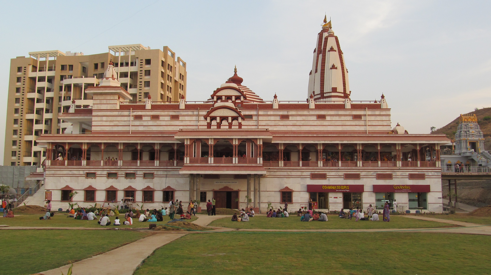

ISKCON Temple
ISKCON New Vedic Cultural Center (NVCC), Sri Sri Radha Vrindavanchandra
temple or ISKCON Pune is a Gaudiya Vaishnavism temple situated in Pune,
India. The temple is dedicated to Hindu god Radha Krishna and was opened
in 2013. It is the largest temple in the city of Pune.
The temple complex is built on 6 acres and it took seven years for
construction. It took 40 Crore rupees to construct the temple funded by
the Iskcon temple in Camp and devotees. The temple was inaugurated by
President Pranab Mukherjee in 2013.
The Radhakrishna temple is built in North Indian architecture style using
red stone and marble while the Venkateswara temple is built in South Indian architecture style (Similar to Balaji temple in Tirumala) using Kota stone
Read More....

Khadakwasla Dam
Khadakwasla Dam is a dam on the Mutha River 21 km (13 mi) from the centre
of the city of Pune in Maharashtra, India.[1][2] The dam created a reservoir
known as Khadakwasla Lake which is the main source of water for Pune and
its suburbs.
In the vicinity of Khadakwasla Dam is the National Defence Academy (NDA),
the Defence Institute of Advanced Technology (DIAT), the College of Military
Engineering, Pune (CME, Dapodi) and Central Water and Power Research Station
(CWPRS). A few kilometres to the south lies Sinhagad Fort; the twin dams of
Panshet and Varasgaon, which mainly supply water for irrigation but also
feed into Khadakwasla Lake, lie just 8 km (5.0 mi) due west of the backwaters
of Khadakwasla Lake.
Read More....

Shaniwar Wada
Shaniwar Wada is a historical fortification in the city of Pune, India.
Built in 1732,[1] it was the great seat of the Peshwas of the Maratha
Empire until 1818. Following the rise of the Maratha Empire, the palace
became the center of Indian politics in the 18th century.[2]
The fort itself was largely destroyed in 1828 by an unexplained fire,
but the surviving structures are now maintained as a tourist site.
The Shaniwar Wada was normally the seven-story capital building of the
Peshwas of the Maratha Empire. It was supposed to be made entirely of
stone but after the completion of the base floor or the first story,
the people of Satara (the national capital) complained to the Chatrapati
Shahu Maharaj(King) saying that a stone monument can be sanctioned and
built only by the king himself and not the Peshwas. Following this, an
official letter was written to the Peshwas stating that the remaining
building had to be made of brick and not stone. Even today if you visit
and see the walls carefully, they are partly made of stone and partly
by bricks. The Wada was then completed and upon being attacked by
the British Artillery 90 years later, all the top six stories collapsed
leaving only the stone base, which was immune to the British artillery.
Hence only the stone base of the Shaniwar Wada remains and can be
seen even today in the older parts of Pune.
Read More....